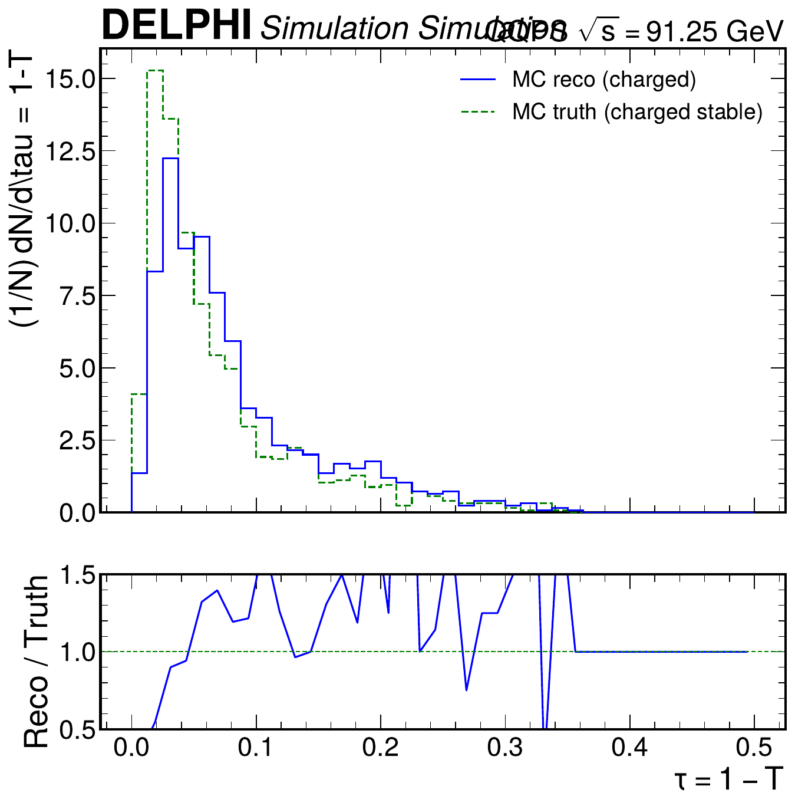
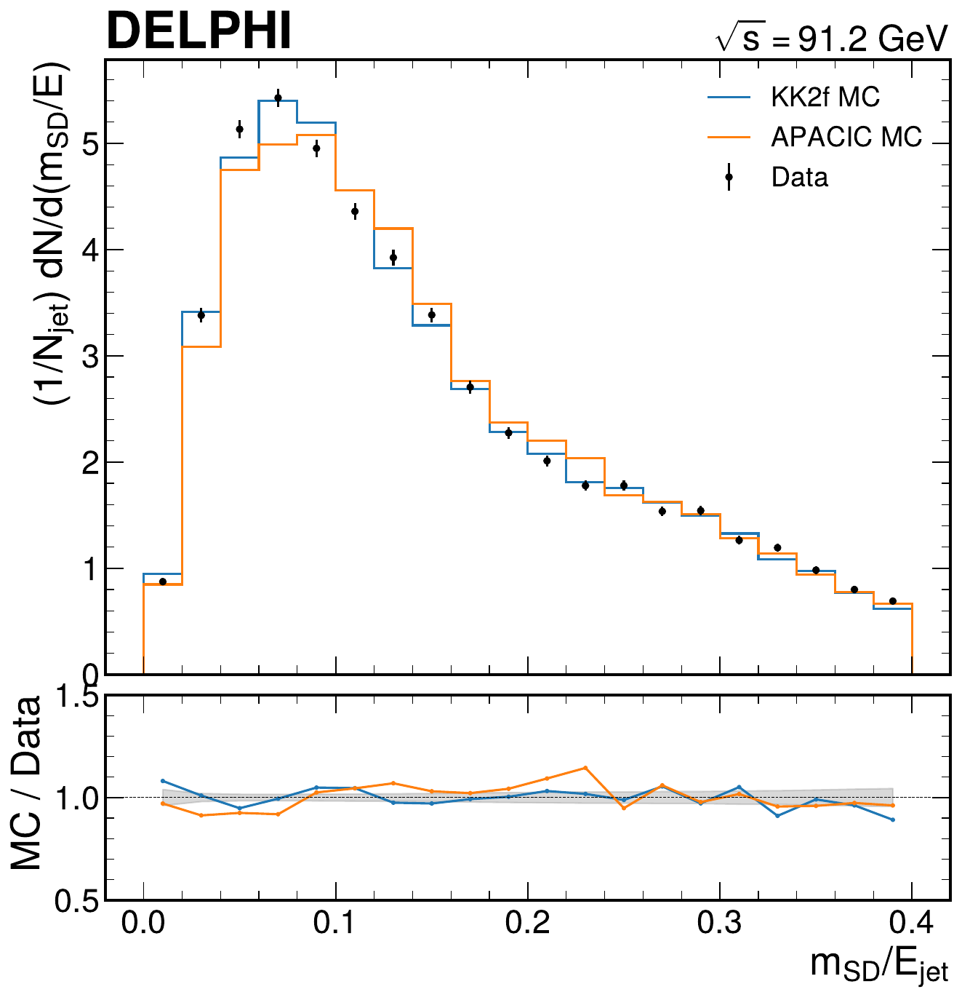

AI Agents Can Already Autonomously Perform Experimental High Energy Physics


2 NSF AI Institute for Artificial Intelligence and Fundamental Interactions
3 CERN
∗ These authors contributed equally.
Large language model-based AI agents are now able to autonomously execute substantial portions of a high energy physics (HEP) analysis pipeline with minimal expert-curated input. Using the Just Furnish Context (JFC) framework, we find that these agents succeed in automating all stages of a typical analysis across the ALEPH, DELPHI, and CMS experiments. Our demonstration of nine distinct autonomous measurements suggests a coming shift in how data analysis and scientific software are developed in the field.
[Submitted on 20 Mar 2026]
ALEPH

Z-Boson Lineshape
Measure the properties of the Z boson including its mass, total width, and hadronic peak cross section using a lineshape scan. The analysis incorporates a precise measurement of the thrust event shape to accurately describe the hadronic final state. Strong coupling $\alpha_s(M_Z)$ is extracted via comprehensive NLO+NLL QCD fits to the thrust distribution.
Lund Jet Plane
Perform a high-precision measurement of the primary Lund jet plane density using archival $e^+e^-$ collision data collected at the Z pole. The observable isolates fundamental properties of the QCD radiation pattern by mapping emissions in the kinematic phase space. Results are fully unfolded to correct for detector effects and compared against leading Monte Carlo event generators.

EEC Correlators
Measure the two-point energy-energy correlator (EEC) directly from hadronic Z decays, representing a robust probe of collinear dynamics. The observable seamlessly connects the perturbative collinear limits described by quantum chromodynamics (QCD) with the non-perturbative behavior of hadronization. Unfolded data are leveraged to test precision theoretical calculations spanning a wide range of angular scales.
Heavy-Flavor Electroweak Observables
Perform a simultaneous measurement of the heavy-flavor partial decay widths ($R_b$, $R_c$) and the forward-backward asymmetry ($A_\text{FB}^b$) of the Z boson. To reliably isolate bottom and charm quark decays, the analysis relies on an impact-parameter tagging algorithm that identifies displaced secondary vertices. This constitutes a precision test of the Standard Model electroweak sector.
DELPHI

$N_\nu$ from $\Gamma_\text{inv}$
Determine the number of light neutrino generations ($N_\nu$) by measuring the invisible decay width of the Z boson. The analysis subtracts the visible hadronic and leptonic partial widths from the total Z width obtained via lineshape fits. The final extracted value tests the fundamental structure of the Standard Model by confirming the existence of exactly three active neutrino families.

Lund Jet Plane
An independent measurement of the primary Lund jet plane density utilizing the DELPHI detector dataset, serving as a critical cross-check against ALEPH results. The analysis constructs coordinates of partonic emissions to map the intricate structure of QCD splittings in a model-independent way. Unfolded observations highlight the robust capability of AI agents to replicate complex, high-dimensionality measurements across different collaborative datasets.

Event Shapes & $\alpha_s$
Characterize the geometric flow of hadronic events using six well-established event shape variables: Thrust, Heavy Jet Mass, Total Broadening, Wide Jet Broadening, C-parameter, and the Jet Resolution Parameter. The distributions are corrected for acceptance and hadronization effects. Through rigorous NLO+NLL theoretical fits, an accurate determination of the strong coupling constant $\alpha_s(M_Z)$ is achieved.

Jet Substructure
Investigate the internal composition of jets originating from light quarks and heavy flavor decays using modern grooming techniques like Soft Drop. The measurements target essential substructure observables such as jet mass and $k_T$ splitting scales. This provides crucial insight into non-perturbative QCD phenomena and helps tune modern parton shower models.
CMS

H → ττ
Directly probe the Yukawa coupling of the Higgs boson to fermions by measuring its signal strength in the $H \to \tau\tau$ decay channel. The analysis specifically targets the semi-leptonic $\mu\tau_h$ final state utilizing the 8 TeV CMS Open Data release. A comprehensive profile likelihood fit is performed to establish a robust measurement of this critical Standard Model parameter.